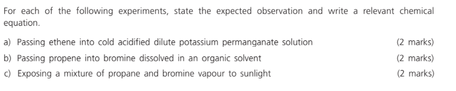

2021-09-11
Question 1
Question 2
Each question consists of two separate statements.
Decide whether each of the two statements is true or false, if both are true,
then decide whether or not the second statement is a correct explanation of the first statement.
Then select one option from A to D according to the following table :
| A | Both statements are true and the 2nd statement is a correct explanation of the 1st statement. |
| B | Both statements are true but the 2nd statement is NOT a correct explanation of the 1st statement. |
| C | The 1st statement is false but the 2nd statement is true. |
| D | Both statements are false. |
| 1st statement | 2nd statement | |
|---|---|---|
| 1 | Kerosene is used as a fuel for aircraft. | Kerosene is a liquid at room conditions. |
| 2 | Low-boiling petroleum fractions are more viscous than high-boiling petroleum fractions. | Low-boiling petroleum fractions contain hydrocarbons with a smaller number of carbon atoms in their molecules than high-boiling petroleum fractions. |
| 3 | Ethane and ethene can be distinguished by acidified potassium dichromate solution. | Ethene can decolorize acidified potassium dichromate solution while ethane cannot. |
| 4 | During thunderstorm, the rainwater is more acidic than normal rainwater. | Nitrogen dioxide is formed in lightning and it dissolves in rainwater to give an acidic solution. |
| 5 | Ethane and chlorine can react when exposed to sunlight. | Energy is required to split the chlorine molecules into free radicals for the reaction. |
| 6 | It is inappropriate to dispose of PVC pipes by incineration. | Incineration of PVC pipes gives fumes which can cause the formation of acid rain. |